MDInPracticeYow2024
Moldable Development in Practice — Patterns for Legacy Modernization
Hello. My name is Oscar Nierstrasz.
As developers, we spend much of our time trying to understand the software systems we are working with, instead of actually writing productive code.
Today I'd like to talk to you about Moldable Development, an approach that opens up our legacy software to expose the internal domain models and makes them explainable. First I'll show you a couple of examples to illustrate moldable development, and then I'll present a few of the patterns we have found that capture best practice in moldable development.
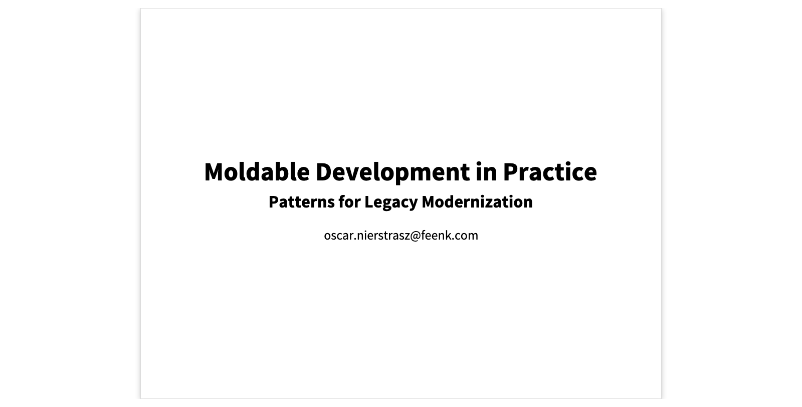
Explainable Systems
The opposite of an explainable system is an opaque one, which makes it hard for you to answer questions about how it works.

Running systems are typically opaque
A running system just shows its UI. You can interact with this, but you can't gain any insight into the inner workings of the game or its logic.

- Click on the die repeatedly, and make moves when possible.
Opaqueness
Other means of understanding opaque systems are also commonly ineffective.
Reading source code does not scale to large systems. Documentation is typically incomplete, out of date, and inconsistent with the current implementation. Generic analysis tools can be useful for answering some questions, but they rarely help you answer very specific questions that you have. Googling or using online resources typically yields many false positives, as is the case with generative AI tools.
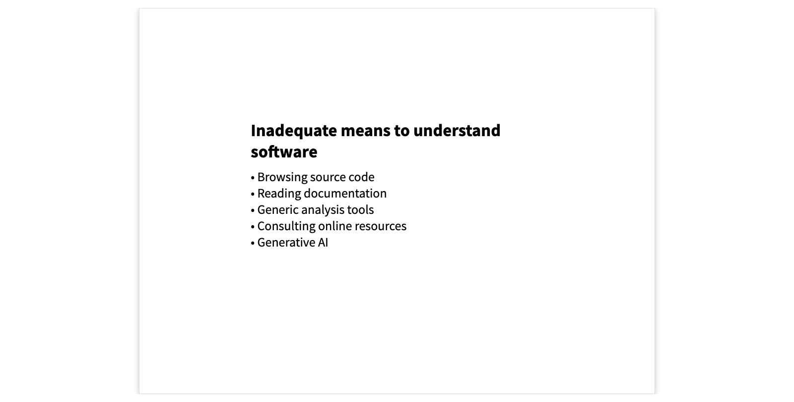
Moldable development in a nutshell
Moldable development is a methodology that makes a system explainable by extending it with numerous, inexpensive and lightweight custom tools that answer specific questions about the system and its underlying domain concepts.
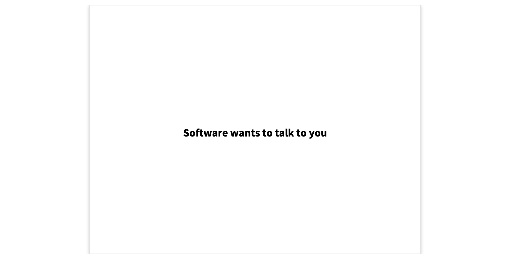
Explainable Ludo
Here we see an object inspector on a live instance of the Ludo game we saw earlier. The difference is that in addition to interacting with it, we can also explore it to understand how it works.
The usual inspector view of objects is the Raw view which only shows the state of the object's instance variables. Instead we have molded the inspector to show us several custom views that explain various aspects of the game.
We can see the state of the Players, the individual Squares, and the history of the Moves.
We can furthermore dive into a particular move, and see further custom views that explain what happened. We can even step through the moves to obtain a kind of animation of the history of the game.
Each custom tool consists of a short method that informs the inspector, or another IDE tool of the extension.

- Show the Raw view - Show the views one by one - Dive into the moves - Step through the moves - Show the code of the Moves custom view
Example: Exploring the COBOL CardDemo
The AWS CardDemo is an open source COBOL mainframe application that is available for exploring and testing various kinds of legacy modernization technologies. It can be freely downloaded from the AWS website.

The raw CardDemo files
Here is the raw download of the files of the CardDemo. We can see there are bitmap files of the screen menus, and cobol source files, but how are they related?
There are also some diagrams, but what do they mean?
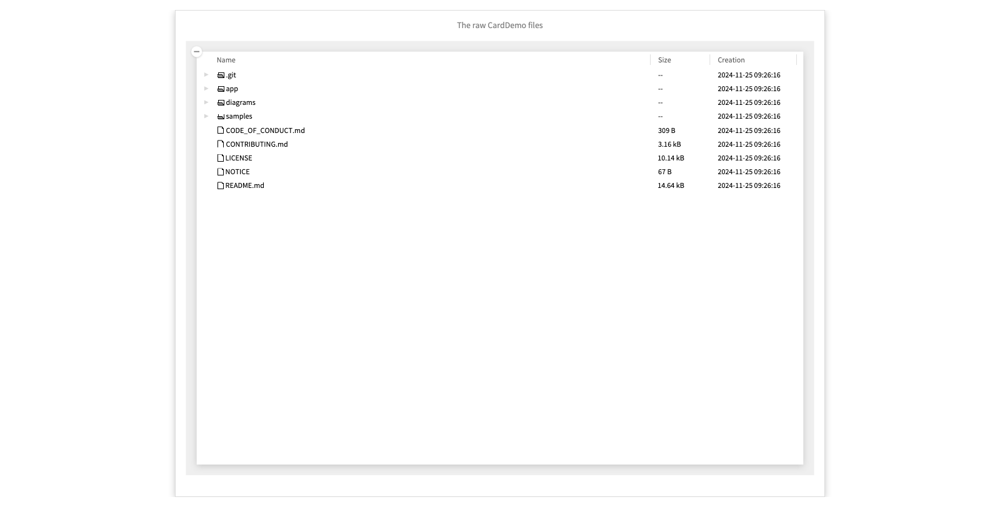
- Browse the app/cbl and diagrams folders
- Click on some of the diagrams
The wrapped CardDemo
Here we have taken the raw source files of the CardDemo and modeled the COBOL domain entities.
From a bitmap we can navigate to its source code, and the map of programs and screen, showing how we can navigate through the menus of the application.
The map is live, so we can navigate to indivudal screens and programs. From a program we can explore its source code, and from their to related entities. For example, we can inspect the individual variables, and see how their memory is allocated. (COBOL variables can have overlapping definitions.)
The central idea is to first take the raw data and wrap them as linked and explorable domain entities. Then, as we pose questions about the system, we introduce lightweight, custom tools, namely views and actions, that allow us to experiment and answer these questions.
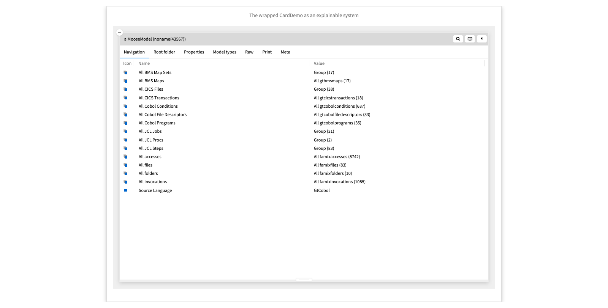
- Inspect All BMS Maps
- Click on the first screen (just to the left of the screen itself)
- Go to the `Programs & screen view to see the screen hierarchy
- Go to the first program
- Inspect the variables
- See the Overlapping view
Example: Exploring the GitHub REST API
Here's a second example where the software data is obtained through a REST API.
The GitHub REST API provides information about organizations, users and repositories in the form of JSON data.
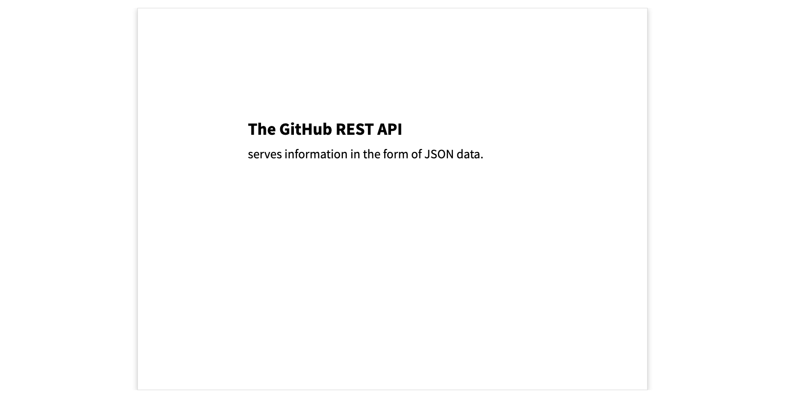
Raw JSON data of the feenk GitHub organization
Here we see the raw JSON data of the feenk organization. It exposes a number of domain concepts, but not in a way that is easy to navigate or understand.

GitHub REST API demo
We demo how to apply moldable development in exploring the GitHub REST API.
First we explore the URL string to see how we can retrieve the contents. We extract the JSON string, find out haw to parse it, and retrieve a dictionary of values.
Now to explore further we turn this into a domain object representing a GitHub Organization. If we explore the basic raw view we can find the underlying data. We lift the dictionary view to make it available to our domain object as a view.
One interesting piece of data is the repos_url. We see it returns an array of JSONs, one for each repository. We extract this as a method.
We wrap each of the repo JSON dictionaries as a Repo object. We fix the default printString to show the name of the repo.
We generate a JSON dictionary view directly from the raw data of the repo.
We generate a repos view from the list of repos that now shows the proper repo names.
Now we can nicely navigate from the organization to each repository.

- Inspect the URL - View the contents - See how to get the contents, and add a snippet to extract this - See how to get the JSON data, and add a snippet - Wrap the dictionary as an Org object - Inspect the Org instance and navigate to the JSON view of the data - Lift the view to the org - Inspect the repos_url - Extract the array of JSONs - Wrap them as Repo objects and cache them in a repos slot - Give them a printString so they display nicely - Add JSON views to the Repo objects and continue
The feenk GitHub organization JSON as a wrapped, moldable object
After a few iterations we enrich the GitHub organization model with several more entities and views, according to whatever interests us.
We can navigate to a particular repository, such as gtoolkit-demos, browse the individual contributors to this repository, and see what kind of git events they have contributed.
We also have a couple of custom actions, for example, an action to open the repository's webiste in a browser, or to inspect the repository if it happens to be installed locally.
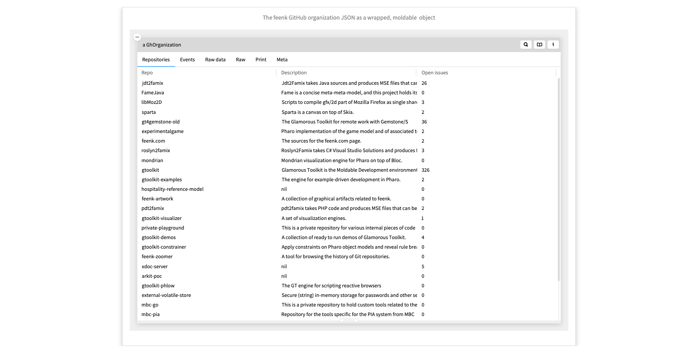
- Click through the repos - Search by name for demo - Browse Contributors and events - Click on the Open in browser and Go to repository actions
Intermezzo -- So what?
What have we seen?
We've seen a few different examples of software systems, as executable code, source code, and web APIs that have been transformed into explorable domain models.
In each case we have decorated these models with tiny, custom tools that show us various things of interest.
How does this work?
The idea of moldable development is to make it very easy to add such custom tools by opening up the development tools themselves to lightweight extensions. This can be done in a systematic way, which we can describe a set of patterns. Now let's look at a few of these patterns in a bit more detail.
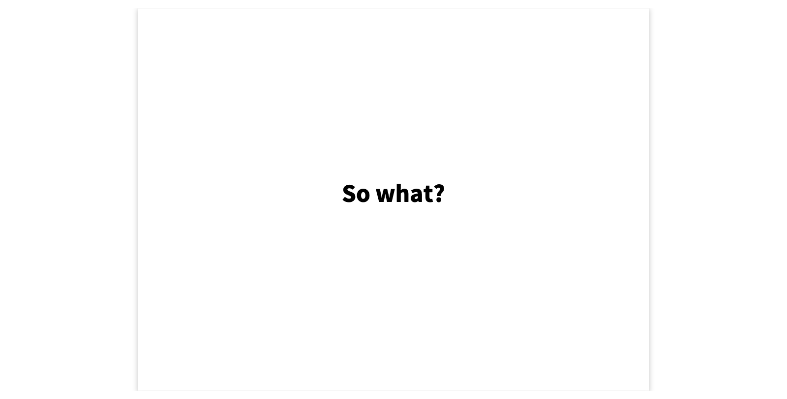
Pattern: Custom View
When you explore a software system and find interesting stuff, how can you ensure that you will be able to easily that stuff again?
The core idea of this pattern is to take the steps you perform to find and display the interesting data, and turn them into a custom view of the object inspector of a suitable domain object.
This is exactly what we saw in the Ludo game, in the Cobol CardDemo, and in the GitHub REST API examples.
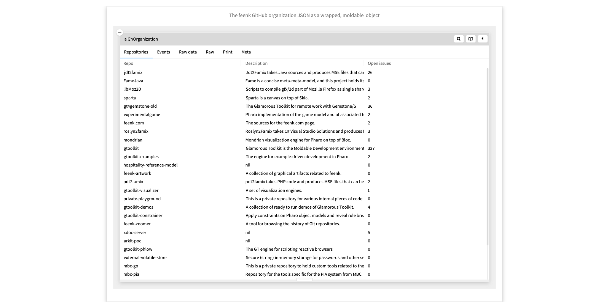
A columned list view
The Glamorous Toolkit supports several kinds of custom views out of the box. One of these, which we already saw several times, is a columned list: a list with several, labeled columns.
Specifying such a view is quite straightforward. You define a method of the domain object with a <gtView> annotation, and ask the aView factory object for a columnedList. You then specify a title for the view, in this case Repositories, a “priority”, which determines the order in which the views appear, the items of the list, and the titles and text of each of the columns.
That's it. Many of the other standard views are similarly simple to specify.
Note that in this case views are specified in Smalltalk, but the specifications are similar in Python, or other languages.
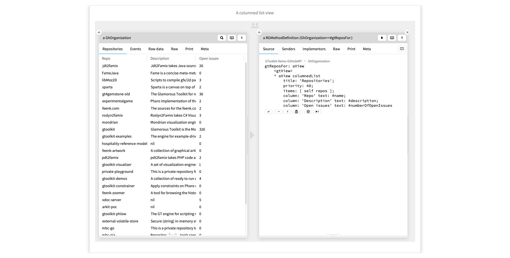
Some Custom Views
Here are a few of the different kinds of custom views that GT supports.
Most of these are simple, though the explicit view allows you to create arbitrary GUI components as views, such as the Ludo game and move views, and the GitHub collaborator cards view.
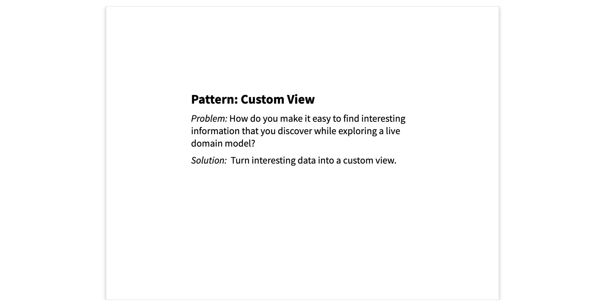
Pattern: Example Object
This pattern starts from the simple observation that a green unit test that returns void is a lost opportunity. Instead of returning nothing, let it return the object under test as an example .
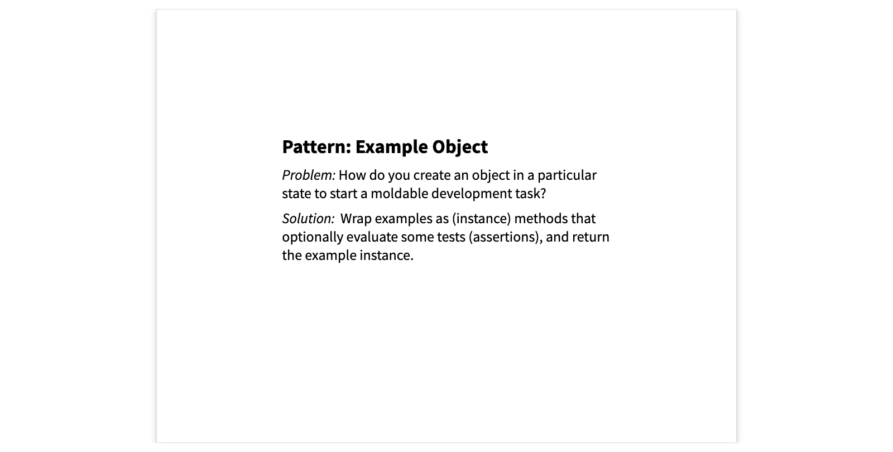
A basic example method
Here is a very simple example. It has the annotation <gtExample>, which is similar to a JUnit Test annotation.
The method creates a Ludo game instance, and performs some assertions.
The difference, and this is key, is that at the end the object is returned. This allows us not only to run the test, but to inspect and explore the result, even if the tests pass .
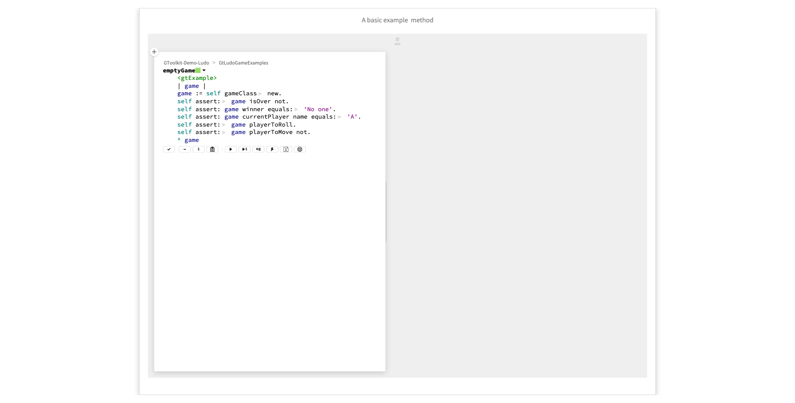
Run the example and explore the result.
A composed example method
Now it gets interesting. Once we have an example method that returns an object, we can use that object to compose new ones. Here we take our emptyGame as a starting point to create a new example.
Once we have the game instance, we perform an action, followed by a number of assertions. As before, we return an example, which can be further composed.
In fact, if we explore the class of this example method, we see that there are numerous composed examples. In the Examples map of this class we can see how these methods are organized into an entire tree of composed examples.

- Run the example - Click on the method name to view the method within its class - Go to the Examples map
Why examples?
So, why are examples interesting? First, we can compose them, reducing code duplication and cascading errors when a dependent test fails.
Second, the live examples can be inspected and explored, thus forming a kind of live documentation. Examples can even be embedded within notebook pages or slideshows, as we have seen here.
Finally, examples can be used as starting point for moldable development in the style we have seen with the GitHub organization example earlier.

Pattern: Moldable Tool
You may be wondering how we can enable these custom views. The key idea is that the development tools must be opened up to become moldable . This means nothing more than that they should recognize when the artifacts ( i.e., object, classes etc.) that they deal with bring with them a custom tool.
A classical example is that of code editors that enable a test runner when they see a class with test methods. The difference with moldable tools is that each object can define its own custom tools.
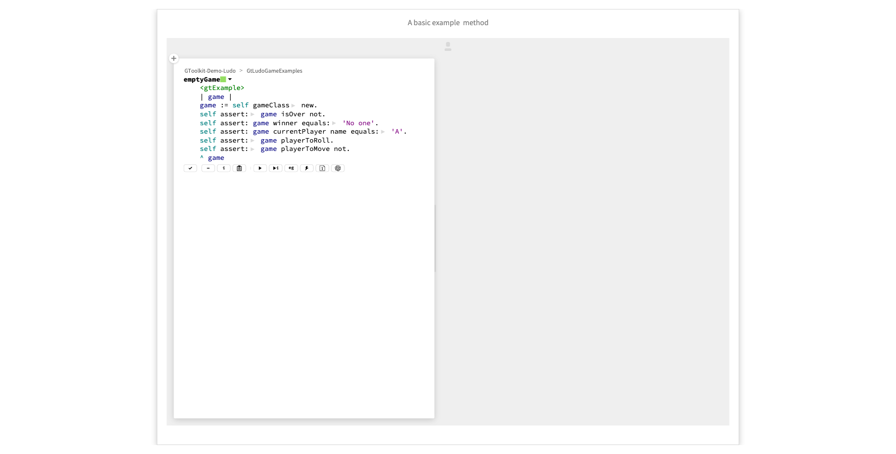
A raw Inspector view
Consider the long-suffering Object Inspector. A tool that is normally only seen from within a debugger. It classically shows you a view such as this one, where we have laboriously navigated to the 6th move of an instance of the Ludo game to understand what has happened.
Although you can explore objects and learn things in this way, it is cumbersome and ineffective.
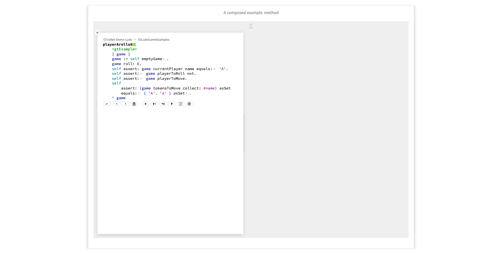
A custom Inspector view
Now contrast the view we have just seem with this custom view of a columned list of all the moves of the game, and drilling into the 6th move, showing us graphically what has happened.
This works simply because the object inspector sees that the LudoGame object and the LudoMove object each have defined tiny, custom tools as methods with the <gtView> annotation.
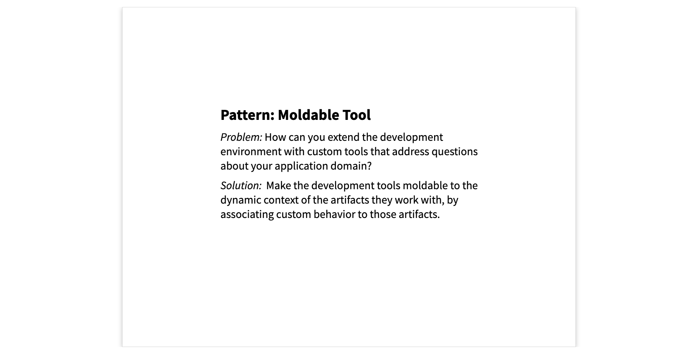
The moldable code editor
Here is another example of a moldable tool, in this case the code browser and editor. The entities are not objects, but classes. Classes can define custom tools as methods annotated with <gtClassView>. For example, the
Examples map
is a view that is activated for any class that has example methods.
The Examples view is another custom view providing us with a simple GUI for running and exploring examples.
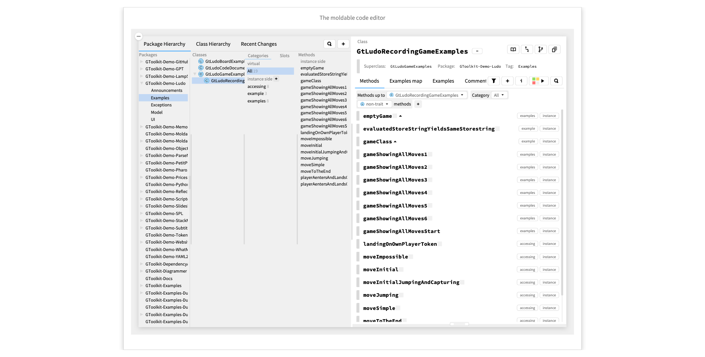
The moldable debugger
The same principle can be applied to many other tools. Here we have a custom debugger defined for mismatched string comparisons.
If the assertion fails, we get a custom debug message showing us a diff. If we open the debugger, we get the diff view in detail, showing us where the strings do not match. If we want, we can also switch to the standard, stack-oriented debugger view.
This works because the AssertionFailure object has a custom diff tool defined with three annotations: one for the object inspector, one for the debugger, and one for the embedded debugger, which we just saw.
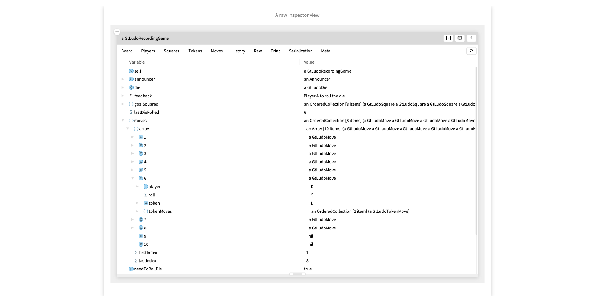
- Run the code showing the embedded diff view. - Open the debugger, showing the detailed diff view. - Switch to the stack view and back. - Inspect the Exception and see this is just an inspector view
A Map of Moldable Development Patterns
Here we see a map of the moldable development patterns we have observed and documented so far. A few of them we have talked about today.
At the top we see Explainable System , which is not really a pattern, but rather what we want to achieve.
We have seen Moldable Tool , which is a prerequisite for the patterns below.
Example Object , which we also saw, offers a way to obtain a Moldable Object . Moldable Object is where we start the moldable development process. We saw this in action when we were developing the GitHub Organization. Every time we wrapped some data, we obtained a moldable object that we could customize. In fact, these wrappers were examples of the Moldable Data Wrapper pattern we see here at the right.
We used a Contextual Playground to write experimental code and extract methods.
At the bottom we have several patterns concerning the creation of custom tools. We focused on Custom View , in particular the “Columned list” view, which is an example of a very Simple View . There are also patterns dealing with the creation of custum actions and searches.
You can learn more about them within Glamorous Toolkit itself. If you download GT from gtoolkit.com, and start it, you will find these live pages documenting the patterns. There is also a PDF of the patterns if you prefer.
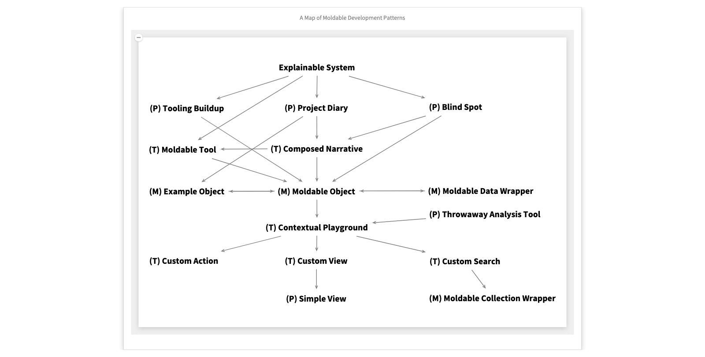
- Click on Explainable System. - Maximize it to reveal the GT book pages. - Go to the MD patterns page and open the arxiv preprint link.
Coda
These patterns are supported by GT, but are not specific to it. By making your development tools moldable, you can support a form of moldable development for your own platform.
Thanks for listening.
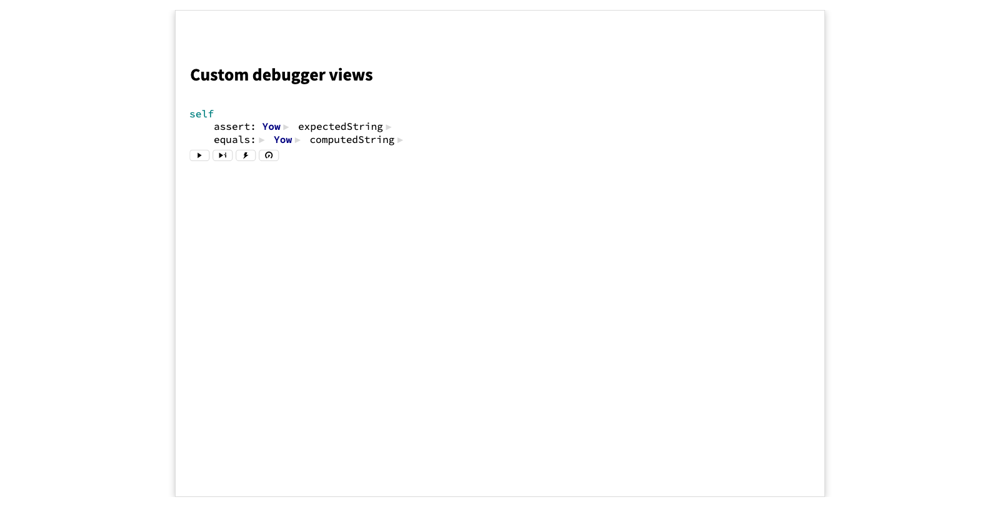